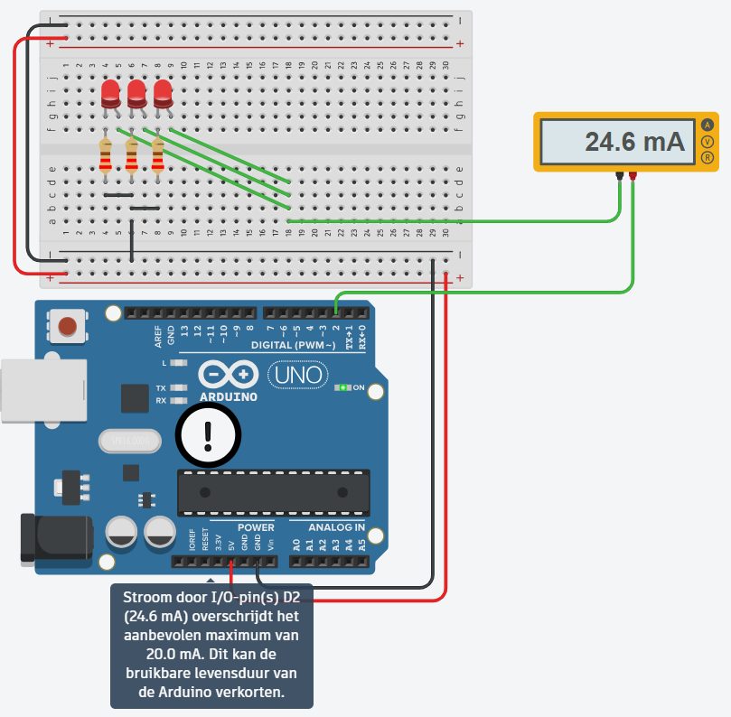
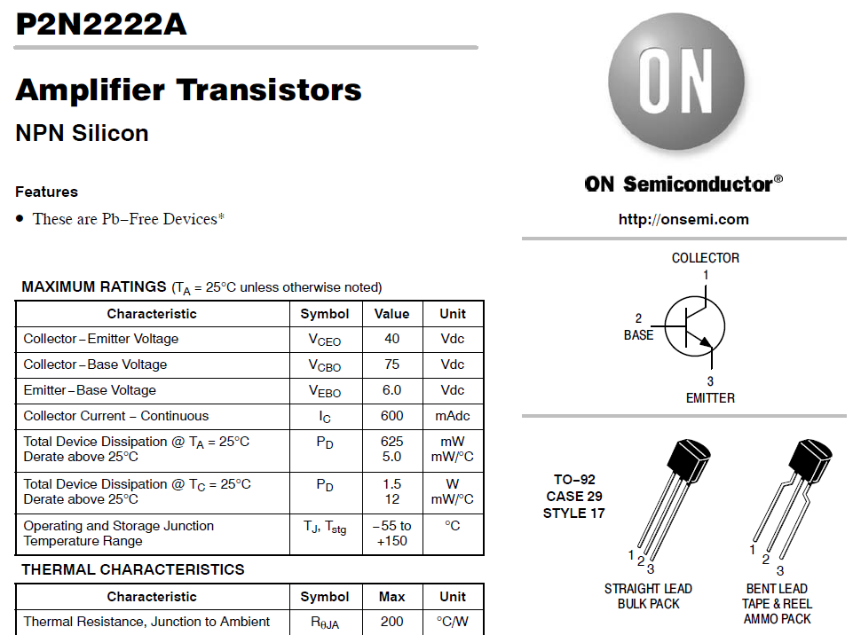
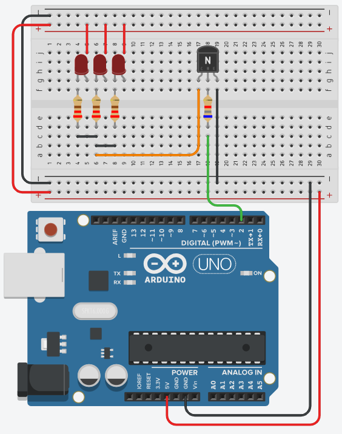
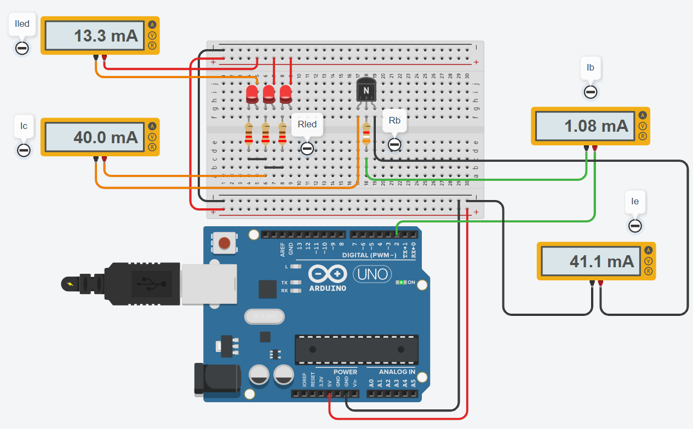

Vermogen schakelen
Een uitgangspin van je Arduino levert ongeveer 20 mA, en dat is minder dan je vaak nodig hebt. Met een transistor laat je een kleine stroom uit die pin een veel grotere stroom schakelen, en die grote stroom komt dan ergens anders vandaan: een externe voeding of de 5V-pin.
Hoeveel stroom een pin levert
Een digitale uitgangspin van een Arduino is geen voeding. Hij is bedoeld om een signaal te geven, en de stroom die hij daarbij kan leveren is beperkt:
| Grens | Waarde |
|---|---|
| Aangeraden per pin | 20 mA |
| Absoluut maximum per pin | 40 mA |
| Alle pinnen samen | 200 mA |
Hoeveel stroom je nodig hebt, weet je al. Bij de wet van Ohm rekende je de voorschakelweerstand van een led uit: 160 Ω in theorie, afgerond naar de 220 Ω die je echt hebt, en daardoor loopt er 14,5 mA door één led in plaats van de nominale 20 mA.
Zet er drie naast elkaar op dezelfde pin, dan tel je die stromen op:
| Aantal leds | Stroom door de pin | |
|---|---|---|
| 1 | 14,5 mA | Onder de aangeraden 20 mA |
| 2 | 29 mA | Boven de aangeraden 20 mA |
| 3 | 43,5 mA | Boven het absolute maximum van 40 mA |
Bij drie leds vraag je dus meer dan de pin ooit mag leveren. Kijk wat TinkerCAD daarvan maakt:

De meter wijst geen 43,5 mA aan maar 24,6 mA. Die 24,6 mA is niet wat je schakeling vraagt, het is wat de pin er nog van kan maken. Onder een belasting die hij niet aankan zakt zijn uitgangsspanning weg, en met minder spanning over dezelfde weerstanden loopt er minder stroom. Je leds branden dus zwakker dan waarvoor je ze berekend hebt.
Hoever de spanning wegzakt, kan je narekenen. Een uitgangspin gedraagt zich als een bron van 5 V met ongeveer 50 Ω in serie, dus hoe meer stroom je vraagt, hoe minder spanning er overblijft. Bij 1 mA meet je nog 4,95 V, bij 12 mA nog 4,4 V, en bij de 24,6 mA hierboven nog ongeveer 3,8 V. Reken je met die 3,8 V in plaats van met 5 V over dezelfde drie weerstanden, dan kom je precies op de gemeten 24,6 mA uit.
Kapot gaat je pin er niet meteen van, maar de uitgangstrap van de microcontroller wordt warm, en hoe verder je boven de grens zit hoe korter je bord meegaat. Onthou vooral het getal dat je zelf berekende: je hebt 43,5 mA nodig, en dat is wat je schakeling straks moet kunnen leveren.
De 5V-pin op het bord komt rechtstreeks van de spanningsregelaar of van je USB-kabel, en niet uit de microcontroller. Die pin levert honderden milliampère. De oplossing bestaat er dus in de stroom voor je leds daar te halen, en de uitgangspin alleen nog te laten bepalen of die stroom loopt.
Een relais of een transistor
Er zijn twee componenten die een grote stroom kunnen schakelen met een klein signaal. Een relais is een schakelaar die je met een elektromagneet bedient: er zit een spoel in die een contact fysiek naar zich toe trekt. Een transistor doet hetzelfde zonder bewegende delen.
| Relais | Transistor | |
|---|---|---|
| Prijs | Ongeveer een euro | Enkele centen |
| Schakeltijd | 5 tot 10 ms | Microseconden |
| Slijtage | Bewegende contacten, dus een eindig aantal schakelingen | Geen bewegende delen |
| Geluid | Hoorbare klik bij elke schakeling | Stil |
| Wat de spoel of de basis zelf trekt | De spoel van een 5V-relais trekt zo'n 70 mA | Een fractie van de stroom die je schakelt |
| Dimmen met PWM | Onmogelijk, het contact staat open of dicht | Mogelijk, zie analogWrite() uit labo 2 |
Kijk vooral naar de voorlaatste rij. Een relaisspoel trekt zelf 70 mA, en dat is opnieuw meer dan de 20 mA van je pin. Om een relais te schakelen heb je dus sowieso een transistor nodig, en dan kan je die transistor net zo goed rechtstreeks op je leds zetten.
Waar een relais wel op zijn plaats is: bij netspanning, want het contact is elektrisch volledig gescheiden van je Arduino, en bij schakelingen waar de stroom beide kanten op moet kunnen. Voor de gelijkstroom van dit labo neem je een transistor.
De MOSFET, een veldeffecttransistor of kortweg FET, doet hetzelfde werk. Het verschil zit in hoe je hem stuurt: een gewone transistor stuur je met een stroom in zijn basis, een MOSFET met een spanning op zijn gate. Er loopt daar vrijwel geen stroom, dus bij een MOSFET valt er ook geen stuurweerstand te berekenen.
Daar staat één ding tegenover. Een gewone MOSFET gaat pas voluit open bij ongeveer 10 V op zijn gate, en jouw pin geeft er 5. Je hebt dus een type nodig dat als logic level verkocht wordt. Neem je een gewone, dan staat hij half open en wordt hij warm, terwijl je schakeling ondertussen lijkt te werken.
De drie aansluitingen
Een NPN-transistor heeft drie aansluitingen. Stuur je een kleine stroom in de basis, dan laat hij een veel grotere stroom door tussen collector en emitter.
| Aansluiting | Waar ze naartoe gaat |
|---|---|
| B (basis) | Via een weerstand naar de uitgangspin van de Arduino |
| C (collector) | Naar wat je wil schakelen, hier de leds |
| E (emitter) | Naar GND |
Welk pootje welke aansluiting is, staat op de eerste pagina van de datasheet. Rechtsboven vind je het schemasymbool met de drie namen erbij, en daaronder de TO-92 behuizing met de pootjes genummerd 1, 2 en 3 in dezelfde volgorde.

Diezelfde pagina geeft je meteen de grenzen van het onderdeel. De collectorstroom mag oplopen tot 600 mA en tussen collector en emitter mag 40 V staan. Een 2N2222 kan dus veel meer schakelen dan wat je er in dit labo mee doet.
Zo ziet de schakeling van de drie leds er dan uit:

De leds hangen boven de transistor: van de plus van de voeding, door de leds en hun voorschakelweerstanden, naar de collector. De transistor zit tussen de leds en de massa en laat de stroom er al dan niet door. Naar de Arduino lopen er drie draden: de 5V en de massa voor de voeding van de leds, en pin 2 naar de basisweerstand. In TinkerCAD is de 2N2222 gemodelleerd, en die gebruik je hier.
Je gebruikt de transistor op deze manier niet om een signaal te versterken, maar als een schakelaar die je met software bedient. Hij staat ofwel helemaal open, ofwel helemaal dicht, en niets ertussen. Die volledig open toestand heet saturatie. Ze is wat je wil, want dan staat er nauwelijks spanning over de transistor en maakt hij dus nauwelijks warmte.
De basisweerstand berekenen
Tussen je Arduino-pin en de basis hoort een weerstand. Zonder die weerstand loopt er een ongelimiteerde stroom je basis in en gaat je pin, je transistor of allebei eraan.
De formule voor die weerstand is de wet van Ohm toegepast op de basiskring:
Je hebt dus drie dingen nodig. Hieronder staat het voorbeeld van de drie leds helemaal uitgewerkt. In de oefening van dit labo doe je dezelfde berekening voor een 7-segment display, met een andere stroom en dus een andere weerstand.
1. Vcc, de spanning op je pin
Een uitgangspin van de UNO die hoog staat geeft 5 V. Dus Vcc = 5 V.
2. Vbe, de spanning over de basis-emitterjunctie
Ook die staat als grafiek in de datasheet. Zoek weer je collectorstroom van 43,5 mA op, ga omhoog tot de curve van VBE(sat) en lees links af: ongeveer 0,7 V. Bij zowat elke siliciumtransistor kom je op die waarde uit.

Onderaan diezelfde grafiek loopt nog een curve, VCE(sat). Dat is de spanning die de transistor zelf overhoudt wanneer hij volledig openstaat. Bij 43,5 mA is dat maar een paar honderdsten van een volt, en dat is precies de bedoeling: wat de transistor niet zelf opneemt, komt bij je leds terecht.
3. Ib, de stroom die je in de basis moet sturen
Die volgt uit de stroom die je wil schakelen, gedeeld door de stroomversterkingsfactor hFE van de transistor:
Ic is de collectorstroom, en die heb je hierboven al uitgerekend: drie leds van 14,5 mA, dus 43,5 mA. Merk op dat je hier vertrekt van wat je schakeling nodig heeft, en niet van de 24,6 mA die de overbelaste pin nog kon leveren. De hFE zoek je weer op in de datasheet.

Het is een grafiek en geen enkel getal, dus je moet ze aflezen bij jouw collectorstroom. Zoek 43,5 mA op de horizontale as, ga omhoog tot de curve van 25 °C, en lees links af: een hFE van ongeveer 200.
Reken je met die 200, dan stuur je precies genoeg basisstroom om je 43,5 mA te halen als alles meezit, en dat is te krap. Kijk nog eens naar de grafiek: bij dezelfde 43,5 mA leest de curve van -55 °C ongeveer 100 af en die van 125 °C ruim 300. Alleen de temperatuur laat je hFE dus al een factor drie schommelen, en daar komt de spreiding van exemplaar tot exemplaar nog bovenop. Rechts op de grafiek zie je bovendien dat de hFE vanaf een paar honderd milliampère instort.
Bovendien wil je dat de transistor in saturatie gaat en dus helemaal openstaat. Een transistor die maar half openstaat verstookt het verschil in warmte.
Deel de hFE daarom ruim door. Hier deel je 200 door 5 en reken je verder met hFE = 40. Dat ligt onder de honderd van de koudste curve, dus je zit goed over het hele temperatuurbereik. Je stuurt dan vijf keer meer basisstroom dan strikt nodig, en dat is de bedoeling.
De berekening
Met hFE = 40 wordt de basisstroom:
En daarmee de basisweerstand:
Die waarde bestaat niet als standaardweerstand. Je kiest de dichtstbijzijnde die je hebt liggen, en dat is 3,9 kΩ.
Bij de voorschakelweerstand van je led rondde je 160 Ω naar boven af, naar 220 Ω. Hier rond je 3954 Ω naar beneden af, naar 3900 Ω. Dat lijkt tegenstrijdig, maar het is twee keer dezelfde vraag: welke kant is veilig voor dit onderdeel?
Een grotere weerstand geeft minder stroom. Voor een led is dat de veilige kant, want te veel stroom maakt hem stuk. Voor een transistorbasis is het net de verkeerde, want te weinig basisstroom laat de transistor half openstaan en dan wordt hij warm. Te veel basisstroom is zelden een probleem, te weinig wel.
Kijk nog eens naar wat je pin nu doet. In plaats van 43,5 mA te moeten leveren, stuurt hij nog 1,09 mA de basis in. Dat is veertig keer minder, en ruim onder de 20 mA die hij aankan. De stroom voor de leds komt uit de 5V-pin en loopt via de collector en de emitter naar de massa. De pin bepaalt alleen nog of dat gebeurt.
De schakeling doormeten
Bouw je deze schakeling in TinkerCAD met 220 Ω per led en de berekende 3,9 kΩ in de basis, en hang je er op de vier interessante plaatsen een ampèremeter in, dan zie je dit:

| Meting | Waar de stroom doorheen loopt | Gemeten | Berekend |
|---|---|---|---|
Iled |
Door één led | 13,3 mA | 14,5 mA |
Ic |
In de collector, dus de drie leds samen | 40,0 mA | 43,5 mA |
Ib |
In de basis, dus wat je pin levert | 1,08 mA | 1,09 mA |
Ie |
In de emitter | 41,1 mA |
De basisstroom komt op een honderdste milliampère uit waar je berekening hem voorspelde. De emitter heeft geen eigen berekening nodig, want zijn waarde volgt uit de twee andere:
Alles wat er langs de basis en langs de collector binnenkomt, verlaat de transistor langs de emitter. Dat is meteen een goede controle op je schakeling: klopt die optelling niet, dan meet je ergens verkeerd of loopt er stroom waar je ze niet verwacht.
Dat verschil kan je tot op de honderdste narekenen. Meet de voedingsspanning en elke spanningsval in de ledkring apart, en vergelijk met wat je berekening aannam:
| Spanning | Gemeten | Aangenomen |
|---|---|---|
| op de 5V-rail die de leds voedt | 5,00 V voltmeter tussen de plusrail en GND. Deze bron zakt niet in onder belasting, want hij komt van de spanningsregelaar en niet uit een uitgangspin |
5 V de berekening gaat uit van de volle voedingsspanning |
| over de led | 2,02 V voltmeter tussen de plusrail en de kathode van de led |
1,8 V de Vforward van een rode led, zoals je ze bij de wet van Ohm invulde |
| over de transistor, VCE(sat) | 0,05 V voltmeter tussen de collector en GND |
0 V de transistor kwam in de berekening niet voor |
| over de voorschakelweerstand | 2,93 V voltmeter over de weerstand, en 5,00 − 2,02 − 0,05 geeft hetzelfde |
3,2 V wat er na de led en de transistor van de 5 V overblijft |
| de onderste drie samen | 5,00 V 2,02 + 0,05 + 2,93, dus de spanning op de rail |
5 V 1,8 + 0 + 3,2, dus de volle voedingsspanning |
In beide kolommen tellen de drie spanningsvallen op tot wat de bron levert. Anders dan bij een uitgangspin geeft de 5V-rail hier ook echt 5,00 V, dus het verschil zit volledig in de verdeling eronder: de weerstand houdt 2,93 V over in plaats van 3,2 V, en daarmee loopt er 2,93 / 220 = 13,3 mA, precies wat de ampèremeter aanwijst. Van de 0,27 V die je mist, zit 0,22 V in de led en 0,05 V in de transistor.
Het is dus vooral de led. Op de wet van Ohm staat dat de Vforward van een led meestal tussen 1,8 V en 2 V ligt, en jij nam de onderkant van dat bereik. Deze led zit aan de bovenkant. Aan de uitgangspin ligt het niet: de stroom voor de leds komt van de 5V-rail en niet uit pin 2, en die rail staat wel degelijk op 5 V.
Voor het dimensioneren maakt dat niets uit, want het valt volledig binnen de marge van factor 5 op de hFE. Reken gerust verder met 1,8 V.